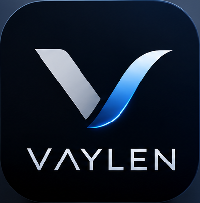

Patient monitoring
Exploring clear, considered interfaces for physiological monitoring workflows.
MEDICAL TECHNOLOGIES, THOUGHTFULLY MADE
Advancing medical technology through intelligent monitoring, precision engineering, and connected healthcare solutions.
Concept visualization · No patient data · Not for clinical use
ABOUT VAYLEN
VAYLEN is a medical technology development company exploring thoughtful ways to bring monitoring, software, and connected systems together. We approach complex healthcare challenges with clarity, care, and dependable engineering.
Exploring clear, considered interfaces for physiological monitoring workflows.
Developing focused software concepts that make complex information easier to navigate.
Designing for considered communication between bedside and central environments.
Putting reliability, maintainability, and human needs at the heart of development.
OUR PRODUCT DIRECTION
Distinct product concepts for the bedside and the central station, designed with the possibility of working together.

BEDSIDE PATIENT MONITORING
A bedside patient monitoring system concept, designed around clear physiological-monitoring interfaces and attentive workflows.
Independent local operation is an architectural goal. Hardware integration and clinical capabilities are not represented as operational.
CENTRAL MONITORING SOFTWARE
A distinct software concept designed to present multiple bedside devices through a dedicated view on a hospital local network.
Network communication and device integrations are development goals, not a claim of a deployed clinical system.
Separate product directions, envisioned to work together.
HOW WE THINK
Our development philosophy starts with dependable foundations and clear boundaries. The principles below describe an architectural direction—not a representation of completed integrations or clinical capabilities.
Local operation is an architectural goal for bedside monitoring, designed to avoid dependence on a remote service.
Communication within a hospital network is a planned direction for connecting bedside and central concepts.
Cloud connectivity may be considered where appropriate; it is optional by design and not presented as a current service.
Clear interfaces and maintainable architecture guide development from early concept through evaluation.
A connected-care direction
ILLUSTRATIVE ARCHITECTURE · PLANNED DEVELOPMENTConceptual only. No live devices, patient information, or active network connection.
OUR VISION
We envision a future where thoughtful medical technology helps people work with greater clarity and confidence. Our ambition is to contribute through careful engineering, useful software, and a lasting respect for the people healthcare serves.
Start a conversationCONTACT
Have a question about VAYLEN or our development direction? Share a note using the form. It is a visual demonstration and is not connected to a messaging service.